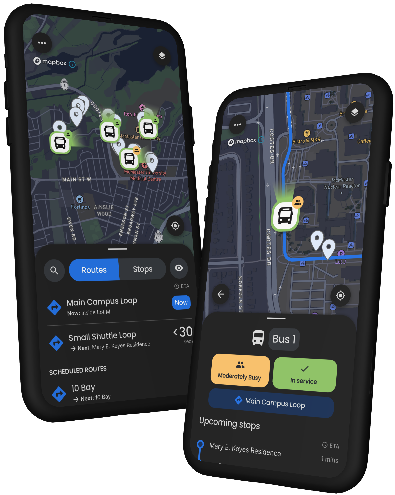

Backend Systems · Real-Time Data · Applied ML
I build software that stays reliable when the real world gets messy.
I’m a backend-focused software engineer at SOTI and co-founder / lead software engineer at Trac, building production systems across C#/.NET, Python, SQL, Firebase, real-time data, and applied ML.
Toronto, Ontario, Canada
Backend
C#/.NET · Python · SQL
Real-time
Firebase event pipelines
Impact at a glance
Production reach at SOTI and real-time performance at Trac.
Experience
Shipping, leading, and learning in production.
My work spans enterprise software, startup ownership, CI/CD reliability, and applied computer-vision research.
Associate Software Developer
SOTI Inc.
Own production feature delivery for SOTI Snap across backend/server, Android, and cross-platform integrations, with features deployed across ~100,000 devices.
- Implemented Windows Authentication support for SQL Server connections in Snap’s Data Access Controller through its Python backend, with error handling, Windows service restart logic, and automatic re-authentication.
- Led Scanner development for Snap App forms across Android/Kotlin and C#/.NET server support with Google ML Kit for live OCR and barcode capture, reducing data-entry time from minutes to under 5 seconds.
- Owned end-to-end delivery of 5 production feature epics spanning architecture, technical design, implementation, and cross-functional delivery across server, Android, and iOS.
- Designed on-device request caching for offline reliability, persisting failed third-party API requests and automatically retrying them when connectivity returns.
- Additional shipped work includes offline/reconnect-aware video playback, announcement deep links and live refresh, and server-signaled workflow list synchronization with view-aware notification handling.
Lead Software Engineer & Co-Founder
Trac Software Solutions Inc.
Co-founded and launched Trac, a real-time shuttle-tracking platform serving 2,500+ weekly active users at McMaster University through Flutter-based iOS and Android apps, with a B2B operating partnership with Attridge Transportation.
- Architected and implemented the Firebase backend and real-time event pipeline, processing vehicle telemetry every 5 seconds and managing session state, ETA/occupancy updates, stale-vehicle detection, authentication, and synchronization across commuter and driver clients.
- Developed and deployed a multiple linear regression arrival-prediction model using Python and scikit-learn, achieving ~30-second average prediction error from historical stop-level wait times and operational data.
- Built separate vehicle-processing algorithms using Kalman filtering for GPS smoothing and A* for stop-level routing-distance calculations.
- Personally authored 75%+ of the backend while leading product, customer onboarding, and business operations.
Software Engineering Intern
SOTI Inc.
Built internal .NET tooling, stabilized BDD/E2E automation, and shipped Java, Kotlin, and C# improvements across SOTI MobiControl.
- Engineered a C#/.NET diagnostic tool using binary search across batches of pull requests, reducing breaking-commit investigation from 60 minutes to 10 minutes.
- Authored 150+ BDD tests and reduced flaky-test failure frequency by 40%.
- Resolved 20+ customer-reported MobiControl defects across Java, Kotlin, and C#, including an Android-agent circular dependency that caused concurrency issues.
Undergraduate Research Assistant
McMaster Faculty of Engineering
Designed and tuned a PID controller with OpenCV, improving RC-car path following from 60% to 95%, and implemented Gipps car-following across 4 Raspberry Pi vehicles over MQTT while maintaining 10 cm following gaps.
HMI/UX Co-Lead & CAV Team Member
McMaster EcoCAR EV Challenge
- Co-led a 5-person HMI/UX team in the EcoCAR EV Challenge and developed a Flutter driver-assistance training app that placed 2nd among 11 university teams.
- Implemented an in-vehicle telemetry and control interface that consumed third-party vehicle data, visualized live and historical trends, performed basic analysis, and sent control commands back to the vehicle.
Software Engineer Intern
TD Securities
Built Python automation for the Unix team to manage servers and streamline patching, ticket generation, and inventory workflows.
- Applied design patterns, testing frameworks, and software-development lifecycle practices to create scalable automation.
- Worked hands-on with server builds, patching, Splunk, ServiceNow, and Ansible inventory.
Technical skills
Skills & technologies
Backend development
Data & real-time systems
Mobile development
Machine learning & vision
Additional languages
Tools & workflow
Selected work
Software built for real-world problems.
These projects show how I think: start with a real constraint, choose practical technology, measure the outcome, and keep iterating.

01 / Product + backend + ML
Trac
A real-time shuttle platform that grew from a capstone into a company serving thousands of weekly riders.
- 2,500+ weekly active users
- 5-second vehicle telemetry
- ~30-second average arrival-prediction error

02 / Computer vision + controls
Autonomous RC-car coordination
OpenCV path tracking, PID control, and Gipps car-following across 4 Raspberry Pi vehicles over MQTT, maintaining 10 cm following gaps.
95%path-following accuracy
Explore the project

03 / Data + PyTorch + CARLA
Autonomous self-parking
Built a C++ pipeline in CARLA to generate and label 10,000+ bird’s-eye-view training images and developed a ResNet-50 model in PyTorch for parking-space detection.
Reinforcement learning was planned but not completed.
10,000+labelled training images
Explore the project
Project archive
More things I’ve designed, built, and tested.
Earlier work in mobile products, hardware, and interactive systems.

Embedded systems · Python
Boxing Robot
A four-arm training rig with programmable combinations, speed controls, and a Raspberry Pi interface.
Flutter · Firebase · Product
MaConnect
A cross-platform campus activity app with profiles, discovery, requests, and group chat.

Python · MySQL · Hardware
COVID-19 Screener
A contactless shift-readiness device recognized with the Highest Impact Award at the Google Solutions Incubator.

C# · Unity 2D
Activate The Ball
A physics-based level game exploring collision response, interface design, and progressive difficulty.
About me
I like owning the outcome, not just the ticket.
I’m a McMaster Software Engineering graduate with experience moving between enterprise delivery, startup leadership, hands-on development, and technical research. I care about clear systems, measurable improvement, and software that makes a complicated job feel simple.
That means I’m comfortable planning architecture with stakeholders, debugging Android concurrency problems, improving CI pipelines, building backend services, or turning experimental ML into a feature people can actually use.
Education
Bachelor of Software Engineering (Co-op)
McMaster University · Graduated April 2025
3.7/4
Dean’s Honour List
Core stack — backend
C#/.NET, Python, SQL / SQL Server, REST APIs, Firebase, Firestore, Realtime Database, Authentication, Git, CI/CD, Linux
Core stack — mobile & applied ML
Kotlin / Java, Android, Flutter, iOS fundamentals, Google ML Kit, scikit-learn, PyTorch, OpenCV, ResNet-50
Additional experience
TypeScript, JavaScript, Dart, C++, system design, concurrency, Jenkins, Gerrit, CARLA simulation, Raspberry Pi, Jira, Confluence, Figma